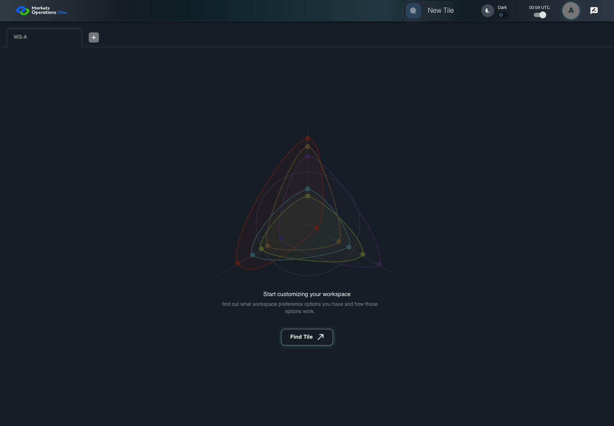

AUTH-094 late manual recovery retains refresh cutoff
FAIL · application/run-050/auth-094-late-manual-recovery-retains-refresh-cutoff-260baf1e1b23-attempt-1 · ACTUAL_APPLICATION_LOCAL_SERVICES
Actual MFE; controlled API responses, clock, visibility and suspension adapters. Unsigned browser-only credentials. No natural lifecycle, real identity or service policy acceptance.
2026-10-22T06:06:14.731Z to 2026-10-22T06:06:24.547Z
Assertions and result · Artifact manifest · Exact run inputs and source hashes
Result SHA-256:cb0762426d6217e4487f9fdca9c1bb649d2cc99131b01b564bbdf35d20aef2bdRetained failure details
[
{
"message": "Error: \u001b[2mexpect(\u001b[22m\u001b[31mreceived\u001b[39m\u001b[2m).\u001b[22mtoBe\u001b[2m(\u001b[22m\u001b[32mexpected\u001b[39m\u001b[2m) // Object.is equality\u001b[22m\n\nExpected: \u001b[32mtrue\u001b[39m\nReceived: \u001b[31mfalse\u001b[39m\n\nCall Log:\n- Timeout 5000ms exceeded while waiting on the predicate",
"stack": "Error: \u001b[2mexpect(\u001b[22m\u001b[31mreceived\u001b[39m\u001b[2m).\u001b[22mtoBe\u001b[2m(\u001b[22m\u001b[32mexpected\u001b[39m\u001b[2m) // Object.is equality\u001b[22m\n\nExpected: \u001b[32mtrue\u001b[39m\nReceived: \u001b[31mfalse\u001b[39m\n\nCall Log:\n- Timeout 5000ms exceeded while waiting on the predicate\n at commonAssertion (/Users/lushevol/code/github/ratan-release-impact/workbench/e2e/support/auth-session.ts:116:109)\n at /Users/lushevol/code/github/ratan-release-impact/workbench/e2e/support/auth-session.ts:144:17\n at AuditCapture.step (/Users/lushevol/code/github/ratan-release-impact/workbench/e2e/support/audit-fixture.ts:94:21)\n at runSessionCase (/Users/lushevol/code/github/ratan-release-impact/workbench/e2e/support/auth-session.ts:132:5)\n at /Users/lushevol/code/github/ratan-release-impact/workbench/e2e/audit-specs/auth-session-expanded.spec.ts:213:3",
"location": {
"file": "/Users/lushevol/code/github/ratan-release-impact/workbench/e2e/support/auth-session.ts",
"column": 109,
"line": 116
},
"snippet": "\u001b[90m at \u001b[39m../support/auth-session.ts:116\n\n 114 | if (text.includes('dialog named \"Your session has been expired\"') && text.includes('visible')) { await timeout.expectVisible(); return true; }\n 115 | if (text.includes('isOnLogout=true')) {\n> 116 | await expect.poll(async () => { await page.clock.runFor(0); return (await observe(page)).isOnLogout; }).toBe(true); return true;\n | ^\n 117 | }\n 118 | if (text.includes('installed access credential') && (text.includes('absent') || text.includes('remains absent'))) { expect((await observe(page)).accessPresent).toBe(false); return true; }\n 119 | if (text.includes('installed refresh credential remains R')) { expect(await equalsToken(page, 'refreshToken', s.refreshR)).toBe(true); return true; }"
}
]Machine observations
- session-fixture.json
ab28650932817848790ee31b3e46d6304ad81926d34965f6bcaa6ac02fd12278
Screenshot capture: CAPTURED. Named frames: 14.
Step screenshot bindings: INCOMPLETE. 13/18 canonical steps have execution screenshots.
Bindings measure structural coverage only. They do not establish screenshot content quality or relevance.
Screenshot content review: NOT_REVIEWED. Recorded context: 0/14 frames. Identical image bytes: 9 repeated frames. Recorded context does not establish human visual review.
Step 14 has no screenshot from an executed step. Step 15 has no screenshot from an executed step. Step 16 has no screenshot from an executed step. Step 17 has no screenshot from an executed step. Step 18 has no screenshot from an executed step.
Canonical step timeline
Given User A is authenticated as user-a in an isolated browser context
Execution: PASSED.
1. step-01 Visible state after step 1: Given User A is authenticated as user-a in an isolated browser context
2026-10-22T06:06:17.726Z · 1440×1000
Step: /Users/lushevol/code/github/ratan-release-impact/workbench/tasks/ui-test-coverage-20261022/test-cases.md:3247
SHA-256:3ef73aaa03e0c32fbb634ced2cc4c078615e87a3a550ab3aa3ecba46b5fda935And the selected fixture tab is labelled "WS-A" inside the tablist named "workspaces" on the Home page
Execution: PASSED.
2. step-02 Visible state after step 2: And the selected fixture tab is labelled "WS-A" inside the tablist named "workspaces" on the Home page
2026-10-22T06:06:17.809Z · 1440×1000
Step: /Users/lushevol/code/github/ratan-release-impact/workbench/tasks/ui-test-coverage-20261022/test-cases.md:3248
SHA-256:3ef73aaa03e0c32fbb634ced2cc4c078615e87a3a550ab3aa3ecba46b5fda935Image bytes match frame 1. An unchanged image can be valid for consecutive assertions. This match does not establish correct step content.
And access A is expired; refresh R expires at controlled time T+600 seconds
Execution: PASSED.
3. step-03 Visible state after step 3: And access A is expired; refresh R expires at controlled time T+600 seconds
2026-10-22T06:06:17.875Z · 1440×1000
Step: /Users/lushevol/code/github/ratan-release-impact/workbench/tasks/ui-test-coverage-20261022/test-cases.md:3249
SHA-256:3ef73aaa03e0c32fbb634ced2cc4c078615e87a3a550ab3aa3ecba46b5fda935Image bytes match frame 2. An unchanged image can be valid for consecutive assertions. This match does not establish correct step content.
And the dialog named "Your session has been expired" on the Home page is visible
Execution: PASSED.
4. step-04 Visible state after step 4: And the dialog named "Your session has been expired" on the Home page is visible
2026-10-22T06:06:17.965Z · 1440×1000
Step: /Users/lushevol/code/github/ratan-release-impact/workbench/tasks/ui-test-coverage-20261022/test-cases.md:3250
SHA-256:3ef73aaa03e0c32fbb634ced2cc4c078615e87a3a550ab3aa3ecba46b5fda935Image bytes match frame 3. An unchanged image can be valid for consecutive assertions. This match does not establish correct step content.
And the relogin service accepts refresh R and returns access B valid until T+1500 seconds
Execution: PASSED.
5. step-05 Visible state after step 5: And the relogin service accepts refresh R and returns access B valid until T+1500 seconds
2026-10-22T06:06:18.041Z · 1440×1000
Step: /Users/lushevol/code/github/ratan-release-impact/workbench/tasks/ui-test-coverage-20261022/test-cases.md:3251
SHA-256:3ef73aaa03e0c32fbb634ced2cc4c078615e87a3a550ab3aa3ecba46b5fda935Image bytes match frame 4. An unchanged image can be valid for consecutive assertions. This match does not establish correct step content.
When the controlled browser clock reaches T+540 seconds
Execution: PASSED.
6. step-06 Visible state after step 6: When the controlled browser clock reaches T+540 seconds
2026-10-22T06:06:18.134Z · 1440×1000
Step: /Users/lushevol/code/github/ratan-release-impact/workbench/tasks/ui-test-coverage-20261022/test-cases.md:3252
SHA-256:46d9e4a52140e7cedf75c1cdbd0926280e4eb1ac77f1b728a7447c8d399f9325And User A clicks the button labelled "Extend" inside the dialog named "Your session has been expired"
Execution: PASSED.
7. step-07 Visible state after step 7: And User A clicks the button labelled "Extend" inside the dialog named "Your session has been expired"
2026-10-22T06:06:18.402Z · 1440×1000
Step: /Users/lushevol/code/github/ratan-release-impact/workbench/tasks/ui-test-coverage-20261022/test-cases.md:3253
SHA-256:7fbeb776defb4651ed50bed6bdbb90738930ec1ec0916647f9f89eb7f29ac827Then the dialog named "Your session has been expired" on the Home page is absent
Execution: PASSED.
8. step-08 Visible state after step 8: Then the dialog named "Your session has been expired" on the Home page is absent
2026-10-22T06:06:18.485Z · 1440×1000
Step: /Users/lushevol/code/github/ratan-release-impact/workbench/tasks/ui-test-coverage-20261022/test-cases.md:3254
SHA-256:7fbeb776defb4651ed50bed6bdbb90738930ec1ec0916647f9f89eb7f29ac827Image bytes match frame 7. An unchanged image can be valid for consecutive assertions. This match does not establish correct step content.
When the fixture delivers the accepted recovery response containing access B
Execution: PASSED.
9. step-09 Visible state after step 9: When the fixture delivers the accepted recovery response containing access B
2026-10-22T06:06:18.636Z · 1440×1000
Step: /Users/lushevol/code/github/ratan-release-impact/workbench/tasks/ui-test-coverage-20261022/test-cases.md:3255
SHA-256:7fbeb776defb4651ed50bed6bdbb90738930ec1ec0916647f9f89eb7f29ac827Image bytes match frame 8. An unchanged image can be valid for consecutive assertions. This match does not establish correct step content.
Then the installed access credential equals B
Execution: PASSED.
10. step-10 Visible state after step 10: Then the installed access credential equals B
2026-10-22T06:06:18.776Z · 1440×1000
Step: /Users/lushevol/code/github/ratan-release-impact/workbench/tasks/ui-test-coverage-20261022/test-cases.md:3256
SHA-256:7fbeb776defb4651ed50bed6bdbb90738930ec1ec0916647f9f89eb7f29ac827Image bytes match frame 9. An unchanged image can be valid for consecutive assertions. This match does not establish correct step content.
And the installed refresh credential remains R
Execution: PASSED.
11. step-11 Visible state after step 11: And the installed refresh credential remains R
2026-10-22T06:06:18.866Z · 1440×1000
Step: /Users/lushevol/code/github/ratan-release-impact/workbench/tasks/ui-test-coverage-20261022/test-cases.md:3257
SHA-256:7fbeb776defb4651ed50bed6bdbb90738930ec1ec0916647f9f89eb7f29ac827Image bytes match frame 10. An unchanged image can be valid for consecutive assertions. This match does not establish correct step content.
When the controlled browser clock reaches T+600 seconds
Execution: PASSED.
12. step-12 Visible state after step 12: When the controlled browser clock reaches T+600 seconds
2026-10-22T06:06:18.993Z · 1440×1000
Step: /Users/lushevol/code/github/ratan-release-impact/workbench/tasks/ui-test-coverage-20261022/test-cases.md:3258
SHA-256:fc5e1bf229e6b9240b09f8ae11d5e8926ed2edf28d83bc5bd5279e0d12d01113Then the session state has isOnLogout=true
Execution: FAILED.13. step-13-failure Visible state when step 13 failed. Later steps did not execute.
2026-10-22T06:06:23.985Z · 1440×1000
Step: /Users/lushevol/code/github/ratan-release-impact/workbench/tasks/ui-test-coverage-20261022/test-cases.md:3259
SHA-256:798693c467818befe45fa3bf89b4ad775b16f35c11dbc4ab8a5adc2d11291ecfWhen the controlled browser clock advances through the 1000-millisecond logout delay
Execution: NOT_EXECUTED.No screenshot is recorded for this step. No executed state is claimed.
Then the textbox with placeholder "Enter Username" on the login page is visible
Execution: NOT_EXECUTED.No screenshot is recorded for this step. No executed state is claimed.
And the text input with placeholder "Enter Password" on the login page is visible
Execution: NOT_EXECUTED.No screenshot is recorded for this step. No executed state is claimed.
And the button labelled "Sign In" on the login page is visible
Execution: NOT_EXECUTED.No screenshot is recorded for this step. No executed state is claimed.
And the tablist named "workspaces" on the Home page is absent
Execution: NOT_EXECUTED.No screenshot is recorded for this step. No executed state is claimed.
Additional named frames

The visible state when the test failed.
2026-10-22T06:06:24.096Z · 1440×1000Step: Test source: /Users/lushevol/code/github/ratan-release-impact/workbench/e2e/audit-specs/auth-session-expanded.spec.ts:211
SHA-256:
798693c467818befe45fa3bf89b4ad775b16f35c11dbc4ab8a5adc2d11291ecfImage bytes match frame 13. An unchanged image can be valid for consecutive assertions. This match does not establish correct step content.
Screenshots establish visible state only. Assertions and traces support functional claims.